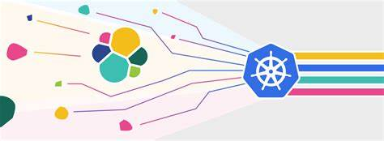
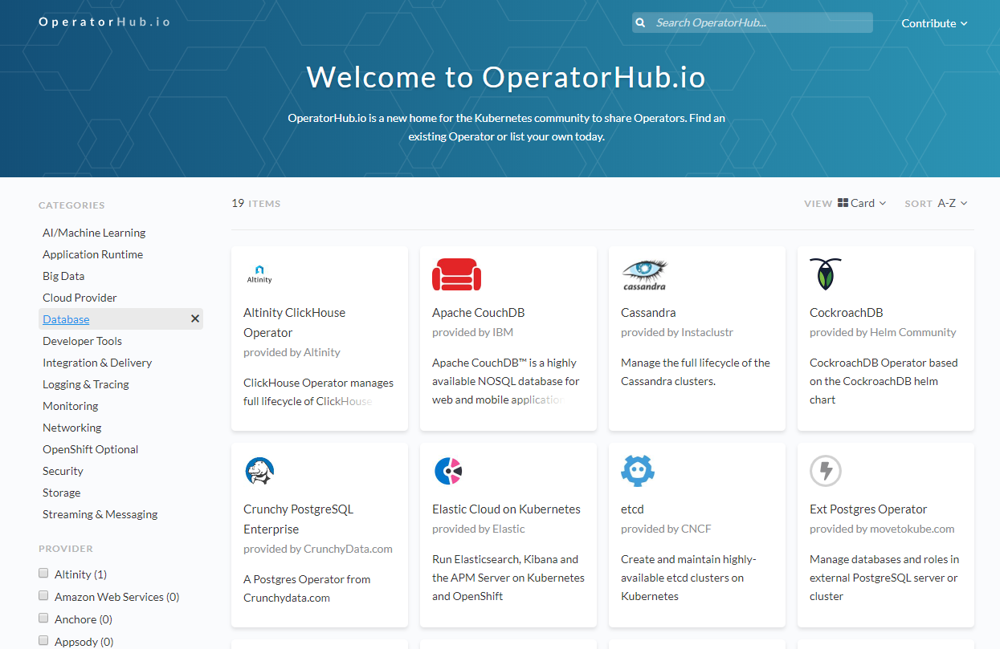

批处理 有状态等应用类型在K8S上应该如何配置?
在 2019-10-23 Wednesday 发布于 DevOps 分类 • 1 min read

众所周知, Kubernetes(K8S)更适合运行无状态应用, 但是除了无状态应用. 我们还会有很多其他应用类型, 如: 有状态应用, 批处理, 监控代理(每台主机上都得跑), 更复杂的应用(如:hadoop生态...). 那么这些应用可以在K8S上运行么? 如何配置?
其实, K8S针对这些都有对应的不同的运行方式. 您要做的, 就是考虑您的应用程序类型会如何影响其运行方式.
Kubernetes定义了适用于不同类型应用程序的不同类型的工作负载。要确定适合您的应用程序的工作负载，请根据如下思路来思考您的应用程序：
-
是为了完成任务。一个典型例子是一个应用程序，启动时会跑一批数据，并在批处理执行完成后退出。该应用程序可能会定期运行(如每月)。对于这种类型的应用程序，合适的Kubernetes (或OpenShift) 容器平台对象包括Jobs和CronJob 对象。
-
长时间一直运行. 对于长时间运行的应用程序，可以编写Deployment或DeploymentConfig。(当然啦, 最好是无状态的)
- 要求高可用. 如果您的应用程序需要高可用，那么您需要调整部署的数量以具有多个实例。
Deployment或DeploymentConfig资源类型可以包括ReplicaSet。借助ReplicaSet，Pod可以在多个节点上运行，以确保即使其中的一个或某几个程序中断，这个应用程序始终还是可用的。
- 要求高可用. 如果您的应用程序需要高可用，那么您需要调整部署的数量以具有多个实例。
-
需要在每个节点上运行。某些类型的Kubernetes应用程序需要在群集中的每个主节点(master)或工作节点(worker)上运行。DNS和监控的应用程序是需要在每个节点上连续运行的应用程序的典型例子。您可以将这种类型的应用程序作为DaemonSet运行。您还可以基于节点标签(node labels)在部分符合条件的节点上运行DaemonSet。
-
复杂的应用, 或需要全生命周期管理。当您要移交应用程序以便其他运维人员可以很方便地使用它时，请考虑创建一个Operator (类似HELM Charts, 区别是HELM只负责安装, Operator除了安装, 还多了全生命周期管理)。Operator 可让您构建智能的应用，因此它可以自动处理备份和升级之类的事情。与Operator Lifecycle Manager(Operator 生命周期管理器, 简称:OLM)结合使用，集群管理者可以将Operator 暴露给特定的namespace，以便集群中的用户可以运行它们。示例有:

- weblogic 集群...
- redis 集群...
- elasticsearch 集群...
- Spark 集群...
- MongoDB的副本集, 分片集群...
- TiDB 集群...
- Prometheus
- Istio
- Kafka 集群...
-
有身份或编号要求。应用程序可能具有身份要求或编号要求。例如，您可能需要运行该应用程序的不多不少刚好三个实例, 并且实例命名为
0，1和2。那么StatefulSet是适合于这种应用。StatefulSet对于需要独立存储的应用程序（例如数据库和Zookeeper群集）最有用。总结起来, 就是有状态的应用就选择 StatefulSet .
总结¶
| 应用类型 | K8S 资源类型 | 备注 |
|---|---|---|
| Job、批处理 | Jobs CronJob |
|
| 长时间运行的无状态应用 | Deployment DeploymentConfig |
DeploymentConfig是OpenShift特有的 |
| 长时间运行的无状态应用- 高可用 | Deployment里加ReplicaSet字段 |
|
| 需要在每个节点上运行的应用 | DaemonSet |
|
| 复杂的应用, 或需要全生命周期管理的应用 | Operator |
Helm Charts也适用于安装复杂应用 |
| 有状态应用 | StatefulSet |